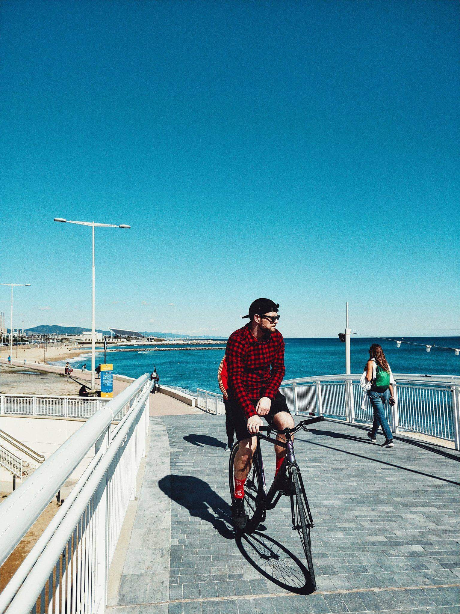

Je ne porte pas de montre quand je travaille, ça me gêne pour coder mais je reste ponctuel ! On me dit souvent que j’ai la panoplie du bobodev parce que je suis sur mac, un peu tatoué et de temps en temps je mets une casquette ! (Attention pas de couvre-chef sur un lieu de travail..). Je suis quelqu’un de cool et posé, assez calme mais ouvert et causant. Je fais beaucoup de jeux de mots pas drôles.
Quand il s’agit de faire de quelque chose de concret je me trouve assez tétu, me faire changer d’avis ou de manière de faire peut prendre du temps. Néanmoins je reste toujours à l’écoute de bons conseils. J’aime apprendre et apprendre à apprendre (dédicace à Epitech). J’ai 23 ans et j’habite à Nancy, j’aime l’été, le web, les vélos (tous) et les jeux vidéos, je suis également amateur de poker. En 2017 je suis parti à Barcelone 1 an pour ma 4ème année à Epitech, je ne me suis pas trop plus à cette culture mais j’ai eu le temps de faire du sport et ça c’était le gros point fort. Mes 3 premières années à Epitech m’ont permis de découvrir la passion du code.
Actuellement je suis responsable pédagogique d’un cursus nouveau à Epitech : la Web@cadémie. Le but est d’encadrer des apprenants venants de différents milieux avec plus ou moins de connaissances de base de la programmation et du web. Pour un stage c’est une superbe opportunité et ça me permet de découvrir plusieurs technologies que je ne connaissais pas. J’aimerais après cette expérience travailler sur des projets d’avantage concrets et poussés. J’ai un certain appétit pour les belles choses, les jolis sites, de temps en temps je dessine sur illustrator, j’aime bien inventer des logos ou dessiner mes futurs tatouages ; and.. VOILA.
J'ai suivi ma formation de 2014 à 2019 à l'EPITECH à Nancy, c'est une école qui forme à la programmation et au développement en général. Grâce à ce cursus on est directement en travaux de groupes, il n'y a plus cette relation élève / professeurs, chacun échange très tôt comme dans un openspace en entreprise par exemple. Un autre avantage est que l'on commence avec des technologies bas niveau (C / C++) afin que tous les autres langages paraissent accessibles rapidement (et c'est le cas!)
Responsable pédagogique Web@cadémie : encadrement pédagogique et suivi des apprenants.
Assistant pédagogique : encadrement pédagogique et suivi des étudiants locaux et de la CodingAcademy.
Intégration d’outils intranet & refonte graphique :
Solution automatisée service comptabilité & finances